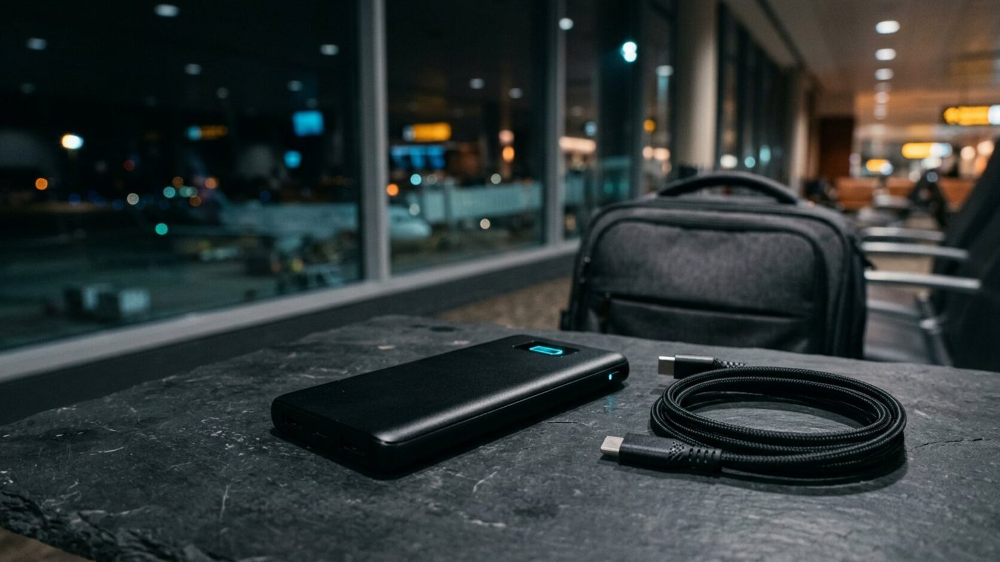
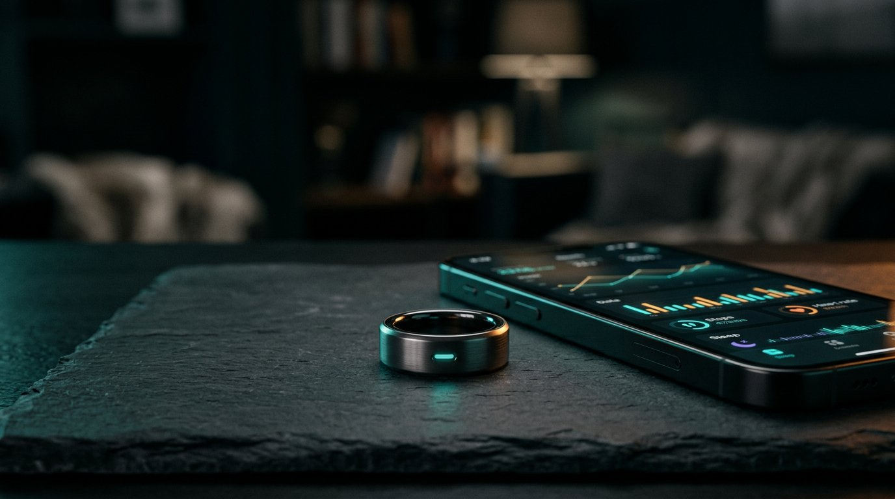
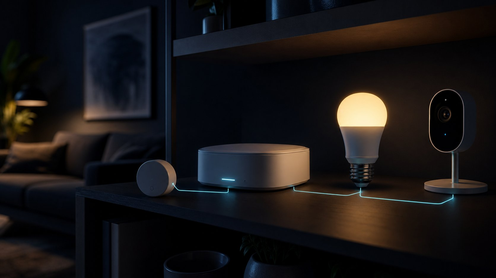

Cybersecurity
Before you sell or recycle an old phone: the handover checklist most people skip
A factory reset clears the storage, not your accounts. The order of operations for signing out before a device leaves your hands.
// LATEST SIGNAL
Editor's picks
Browse storiesAI-powered scams: how to spot the new generation of phishing
 Gadgets
Gadgets
The best budget laptops for remote work right now
Technology
Technology stories5G home internet in 2026: when the wireless box beats the wire
Six tests to run inside the trial window before you cancel a wired line that already works.
Wi-Fi 7 in 2026: when the upgrade actually changes anything
MLO, 6 GHz, and mesh backhaul: the honest test for whether a new router changes anything at home.
Right to repair in practice: how to keep your devices alive longer
Diagnose first, check repairability before buying, and know when a fix stops being worth it.
 Technology
Technology
Cloud backups are not a backup plan until you test them
Cloud storage is useful, but recovery only works if exports, retention, and restore steps have been tested.
 Technology
Technology
Technology resilience in 2026: a practical regional guide
Build dependable systems with practical guidance for the US, Canada, UK, and Australia.
Home internet that stays up: a practical redundancy plan
Backup connections, failover, and power — what is worth buying and what is not.
Inside the race to build smaller, cheaper data centres
Edge computing is being pitched again — this time the economics might actually work.
Wearables are starting to talk to each other properly
Cross-brand syncing was the missing piece. It is finally showing up.
Cybersecurity
Cybersecurity storiesBefore you sell or recycle an old phone: the handover checklist most people skip
Eight steps in order, and what to do when the device is already gone, locked, or dead.
A password manager is one password away from locking you out
The recovery kit, the second key, and the ten-minute drill that stops the vault becoming a trap.
SIM swaps: how to stop your phone number being the weak link
Carrier locks, an account PIN that is not guessable, and getting texted codes out of your recovery loop.
What to do in the first 24 hours after a data breach notice
Confirm the notice, secure the account that unlocks the rest, and match the response to the data.
 Cybersecurity
Cybersecurity
Shared device security: a household checklist for 2026
A simple plan for shared laptops, tablets, consoles, smart TVs, and family phones.
 Cybersecurity
Cybersecurity
How to protect online accounts in 2026
Passwords, passkeys, phishing, and recovery guidance for the US, Canada, UK, and Australia.
AI-powered scams: how to spot the new generation of phishing
Cloned voices and flawless emails have retired the old advice about spelling mistakes.
Two-factor isn’t enough anymore. Here’s what’s next.
Passkeys are finally mainstream — but adoption is uneven across the apps you actually use.
Small business, big target: the case for a real security budget
Attackers have noticed that small teams often skip the basics. Here is where to start.
AI Tools
AI Tools storiesAI text detectors are not evidence. Here is what they can tell you
False positives, blind spots, and how to read a score without letting it end someone's case.
Your AI assistant remembers more than you think. Here’s how to audit it.
What assistants store, what they quietly infer, and the ten-minute audit that puts you back in control.
Local AI models: a private option when the cloud is too much
What runs on ordinary hardware, what still needs the cloud, and how to keep the trade-offs honest.
 AI Tools
AI Tools
A private AI workflow for research without oversharing
A simple workflow for summaries, research notes, and drafts without putting sensitive data into every prompt.
 AI Tools
AI Tools
AI agents in the browser: a practical regional guide
Use browser AI agents responsibly in the US, Canada, UK, and Australia.
AI meeting notetakers are useful. Check the settings first.
They save real time — and quietly build a searchable archive of everything anyone said.
What “agentic” actually means, explained simply
The term is everywhere. The definition keeps slipping. Here is a version that holds up.
Free vs. paid AI plans: where the upgrade is actually worth it
A category-by-category breakdown of when the free tier stops being enough.
Gadgets
Gadget storiesYour next phone may have no SIM tray. What eSIM-only changes
What you gain at the airport, what you lose when the phone dies, and the five-minute check before buying.

GadgetsPower banks on planes: the 2026 rules, and how to pack for them
Two banks, 100 Wh or less, cabin only — and the watt-hour maths that decides whether your brick flies.

GadgetsSmart rings in 2026: what they track, what they cost, and whether they are worth it
Comfort, battery habits, and the subscription that decides whether the ring is really worth it.
 Gadgets
Gadgets
Buying refurbished gadgets in 2026: what to check first
Refurbished phones, laptops, and tablets can be smart buys if you check batteries, locks, warranty, and support first.
 Gadgets
Gadgets
Connected gadgets in 2026: a smart regional buying guide
Buy better connected gadgets in the US, Canada, UK, and Australia.
Gadgets
The best budget laptops for remote work right now
What actually matters below the flagship price — and what to ignore.

GadgetsSetting up a smart home without a subscription trap
A buyer’s guide to devices that work locally and stay working.
 Gadgets
Gadgets
Is it finally time to skip the phone upgrade this year?
A realistic look at what has actually changed generation over generation.
Stay connected
18K+
Newsletter subscribers
42K+
Followers on X
9K+
YouTube subscribers
THE INTELGUARD BRIEFING
A five-minute daily tech & security briefing
What changed overnight, and whether it actually matters.
Get the briefing